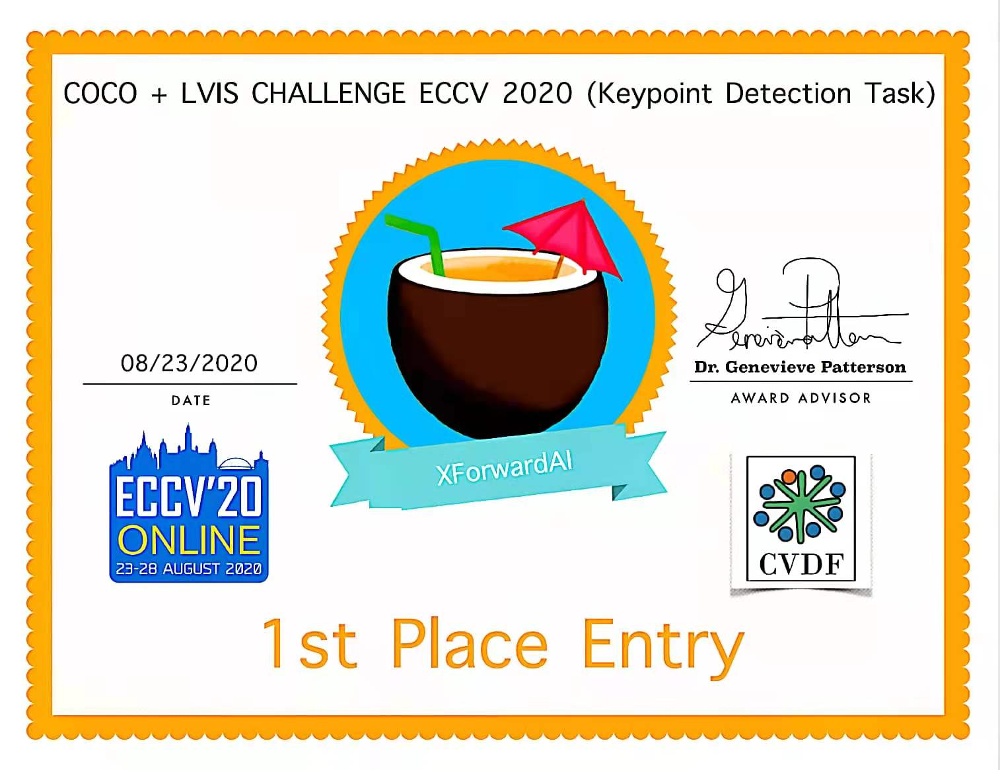
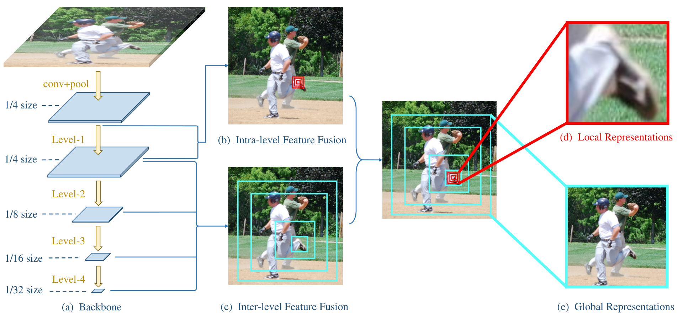
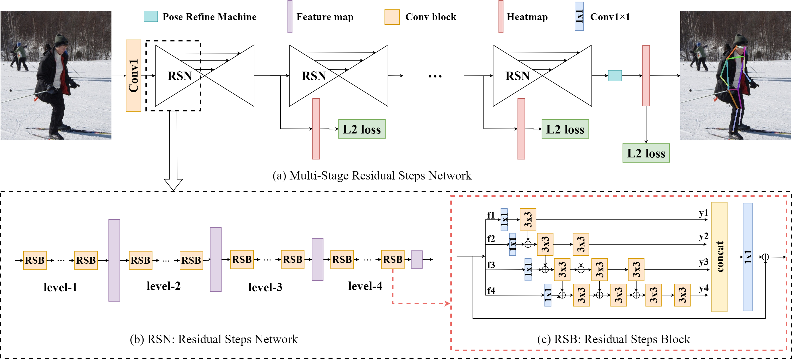
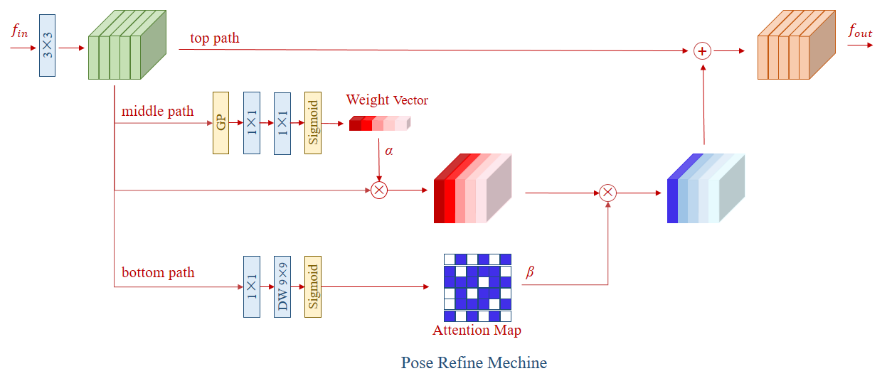
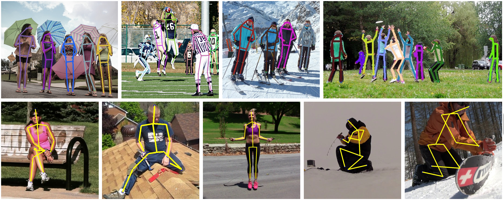
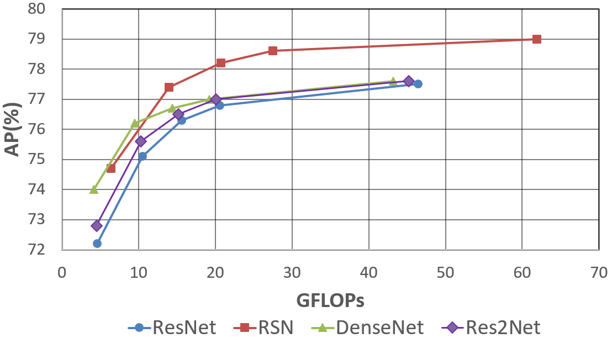
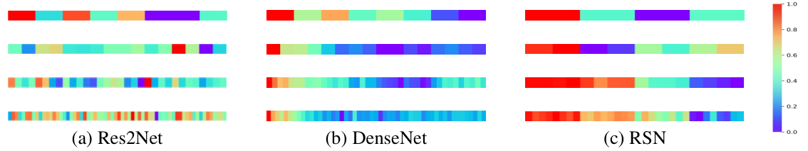
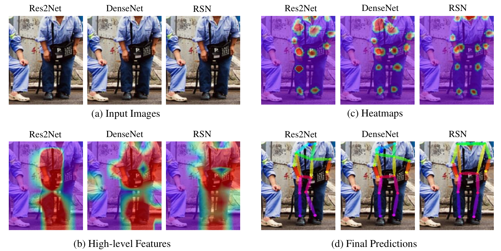

RSN: Learning Delicate Local Representations for Multi-Person Pose Estimation
European Conference on Computer Vision (ECCV), 2020 · Spotlight
1 Megvii Inc. 2 Tsinghua University 3 Chinese Academy of Sciences 4 Beihang University 5 Ocean University of China
Challenge Certificates



Single-Person Pose Estimation
Multi-Person Pose Estimation
Method Overview
Residual Steps Networks (RSNs) combine features at the same spatial resolution to retain the detail needed to locate joints. Within each Residual Steps Block, the convolution branches have different receptive fields and share features through element-wise sums. The Pose Refine Machine (PRM) adjusts the output using local spatial attention and global channel weights. Method in the paper






Results from the Paper
The original RSN reports 78.6 AP on COCO test-dev and 93.0 PCKh@0.5 on MPII test with a single model. The ensemble reaches 79.2 AP on COCO test-dev and 77.1 AP on COCO test-challenge. Results in the paper
Qualitative Predictions


COCO Keypoint Detection
| Model | Input size | GFLOPs | AP | AP50 | AP75 | AR |
|---|---|---|---|---|---|---|
| RSN-18 | 256 × 192 | 2.5 | 71.6 | 92.6 | 80.3 | 77.7 |
| RSN-50 | 256 × 192 | 6.4 | 72.5 | 93.0 | 81.3 | 78.8 |
| 2×RSN-50 | 256 × 192 | 13.9 | 75.5 | 93.6 | 84.0 | 81.3 |
| 4×RSN-50 | 256 × 192 | 29.3 | 78.0 | 94.2 | 86.5 | 83.4 |
| 4×RSN-50 | 384 × 288 | 65.9 | 78.6 | 94.3 | 86.6 | 83.8 |
| 4×RSN-50 ensemble | — | — | 79.2 | 94.4 | 87.1 | 84.1 |
RSN rows from the COCO test-dev comparison. Full paper table
| Model | AP | AP50 | AP75 | AR |
|---|---|---|---|---|
| CPN | 72.1 | 90.5 | 78.9 | 78.7 |
| SimpleBase | 74.5 | 90.9 | 80.8 | 80.5 |
| MSPN | 76.4 | 92.9 | 82.6 | 82.2 |
| 4×RSN-50 | 77.1 | 93.3 | 83.6 | 82.6 |
The RSN ensemble won the 2019 COCO Keypoint Challenge. Full paper table
MPII Human Pose Estimation
| Method | Head | Shoulder | Elbow | Wrist | Hip | Knee | Ankle | Mean |
|---|---|---|---|---|---|---|---|---|
| Chen et al. | 98.1 | 96.5 | 92.5 | 88.5 | 90.2 | 89.6 | 86.0 | 91.9 |
| Yang et al. | 98.5 | 96.7 | 92.5 | 88.7 | 91.1 | 88.6 | 86.0 | 92.0 |
| Ke et al. | 98.5 | 96.8 | 92.7 | 88.4 | 90.6 | 89.3 | 86.3 | 92.1 |
| Tang et al. | 98.4 | 96.9 | 92.6 | 88.7 | 91.8 | 89.4 | 86.2 | 92.3 |
| Sun et al. | 98.6 | 96.9 | 92.8 | 89.0 | 91.5 | 89.0 | 85.7 | 92.3 |
| 4×RSN-50 | 98.5 | 97.3 | 93.9 | 89.9 | 92.0 | 90.6 | 86.8 | 93.0 |
The single RSN model improves mean PCKh@0.5 by 0.7 points over the prior best score in the table. Paper table
Accuracy and Feature Analysis
On COCO minival, RSN-18 improves AP from 70.7 to 73.6 over ResNet-18, with compute rising from 2.3 to 2.5 GFLOPs. For 4×RSN-50 at 256 × 192, PRM raises AP from 78.6 to 79.0. Backbone comparison · PRM ablation






RSN + RTMPose-X Results
The release adds a high-resolution RSN heatmap branch, pooled spatial attention, and proposal-conditioned confidence. Training uses annotations from COCO train2017 and MPII.
| Model | AP | Latency |
|---|---|---|
| Official RTMPose-X | 78.818237 | 3.338 ms |
| RSN + RTMPose-X | 79.124422 | 5.401 ms |
AP uses the full validation split, H56 person proposals, flip inference, and OKS NMS. Latency measures one batch-1 pose forward on an RTX A5000 with fused FP16 CUDA Graph execution.
Benchmark detailsBibTeX
@inproceedings{cai2020learning,
title = {Learning Delicate Local Representations for Multi-Person Pose Estimation},
author = {Cai, Yuanhao and Wang, Zhicheng and Luo, Zhengxiong and Yin, Binyi
and Du, Angang and Wang, Haoqian and Zhang, Xiangyu and Zhou, Xinyu
and Zhou, Erjin and Sun, Jian},
booktitle = {European Conference on Computer Vision},
year = {2020}
}